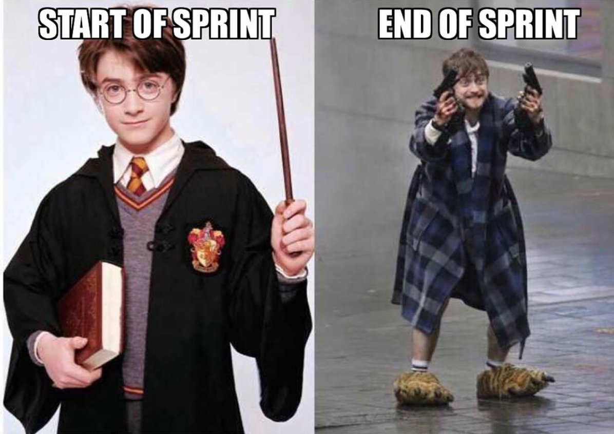

All developers team happy with SCRUM and request use it to any project!
SCRU-U-U-UM!
SCRU-U-U-UM!
SCRU-U-U-UM!
Developers from all over the world daily build their work guided by the Scrum methodology, there are real keepers of the methodology - the Scrum masters
And what is it?
That's all. So simple.
But... This system helps to organize a complex and multi-level world of tasks...
As if you have a simple and easy way before you!

A sprint is a short time frame during which a scrum team does a given amount of work. © Atlassian

Have you really achieved your goals?)
It is commonly called the daily scrum meeting. The content of this meeting depends on the team.
Good example is meeting agenda at Atlassian company
- "What did I manage to do yesterday?"
- "What will I be working on today?"
- "What problems are holding me back from moving forward?"